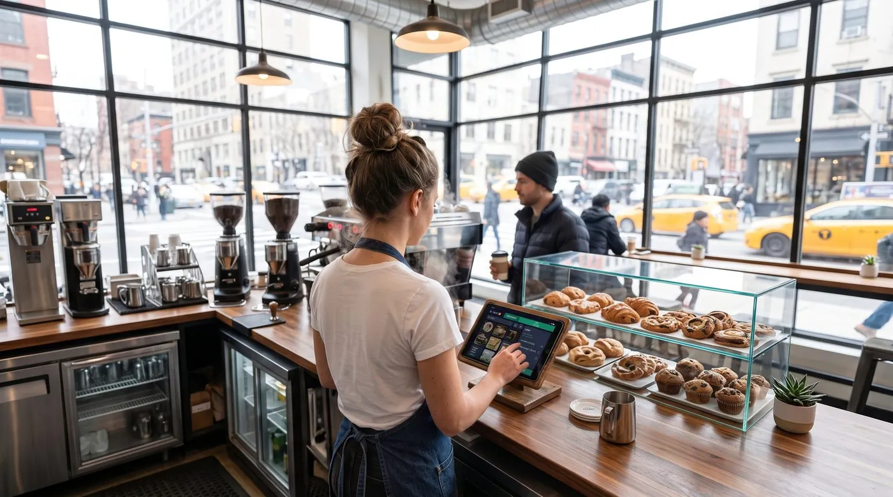

Best Bakery POS System in 2026: How to Choose (and What It Really Costs)
A bakery lives and dies by the morning rush. Between 7 and 9 a.m. you might serve more customers than the rest of the day combined, and every fumbled transaction is a longer queue and a lost sale. The right bakery POS system is what keeps that line moving, ringing up a croissant by unit, a bag of cookies by weight, and a coffee-and-pastry combo without breaking stride. This guide walks you through how to choose the best point-of-sale system for a bakery, the features that actually matter behind the counter, and the real monthly cost once card-processing fees are included.

What a bakery POS system really does in 2026
A modern bakery POS system is far more than a cash drawer with a touchscreen. It rings up sales fast, prints or emails receipts, tracks what came out of the oven and what is left in the case, manages staff across shifts, and feeds you reports you can act on the next morning. Most run in the cloud on a tablet or phone, sync to a dashboard you can open from home, and connect to a card reader and, often, a scale.
One quick note on language before we compare options. In the United States, owners search for a "POS system" or "point-of-sale system". In the UK and Ireland the very same product is usually called an "EPOS system" (electronic point of sale) or simply a "till system". Don't let the vocabulary confuse you, a bakery EPOS system and a bakery POS system are the same tool, and the features your counter needs are identical on both sides of the Atlantic.
Bakery-specific needs to look for
A bakery is not a clothing boutique and not a sit-down restaurant. It has its own rhythm and its own headaches, so the generic "best POS" lists only get you halfway. Here are the things that genuinely matter behind a bakery counter.
1. Fast checkout for the morning rush
Speed is the whole game. Your busiest hour decides your day, and a slow till turns a happy queue into a frustrated one that walks out. Look for big, customisable product buttons for your best-sellers, one-tap combos (coffee plus pastry), and a layout a new weekend hire can learn in minutes. Every second shaved off a transaction is another customer served before the croissants run out.
2. Sell by weight or by unit
Bakeries sell in two different ways at once. A baguette or a single tart is sold by unit; cookies, brownies, pick-and-mix pastries, sliced cake and loose confectionery are often sold by weight. A proper bakery POS system handles both, connecting to a scale or letting staff key in the weight, then calculating the line total from a price per kilo or per pound. Without it, your team is doing mental maths at the counter while the queue grows.
3. Waste & shelf-life tracking
Fresh product is perishable, and unsold bread at closing time is money in the bin. A POS that tracks production against sales tells you what actually sells on a rainy Tuesday versus a sunny Saturday, so you bake to demand instead of to habit. Even simple end-of-day waste logging, recording what you discarded, turns guesswork into a number you can shrink week after week.
4. Loyalty & regulars
Bakeries run on regulars. The same faces appear every morning, and repeat business is far cheaper to keep than new business is to win. A built-in loyalty program, points, a digital stamp card, or simple customer profiles, rewards the people who already love you and gives them a reason to walk past the competitor on the corner.
5. Click & collect and pre-orders
Celebration cakes, party platters, holiday orders and bulk bread for a local café all need to be taken in advance, scheduled, and ready for pickup. Click and collect (and online pre-orders) lets customers reserve and pay ahead, smoothing out your production and capturing sales you'd otherwise turn away on a busy morning.
6. Multiple staff, one counter
Mornings are all hands on deck. You need individual logins, clear permissions, and basic shift tracking so you know who sold what, without slowing anyone down. For bakeries that also supply local cafés or offices, the ability to run a customer tab or account (sell now, settle later) turns wholesale relationships into repeat revenue.
How to choose: a 6-point checklist
Before you compare brands, get clear on what you need. Run through these six questions and write down your answers, they narrow a crowded field fast.
1. What do you sell, and how?
A pure takeaway counter, a bakery-café with seating, and a wholesale-plus-retail operation all have different needs. Seating means you may want table service; wholesale means you want customer accounts and invoicing; a pure counter wants raw speed above all.
2. What is your real monthly card volume?
This is the single biggest cost driver. A bakery doing $20,000 a month in card sales at 2.6% pays roughly $520 a month in processing, far more than any software subscription. Know your number before you compare.
3. Free plan, or paid tier?
Many owners are surprised how far a good free plan goes. Start free if you can, and pay for modules (deeper inventory, loyalty, multiple locations) only once they earn their keep.
4. Do you need offline mode?
If your internet drops mid-rush, an offline-capable POS keeps you selling. Without it, an outage at 8 a.m. means you stop taking orders at your busiest moment.
5. Are you locked into one processor or one piece of hardware?
Some systems force you onto their payment processing and their terminal. That can be convenient, or it can trap you in fees you can't shop around.
6. How fast can you actually go live?
The best small-bakery systems let you create an account and ring up your first sale in minutes, on a tablet you already own.
The real costs (including card-processing fees)
Bakery POS pricing has two layers, and owners routinely focus on the wrong one.
Layer 1: software subscription
This ranges from $0 on genuine free plans to roughly $69-$165+ per month for full hospitality or retail suites. It's the visible price, and usually the smaller one.
Layer 2: card-processing fees (the big one)
Every card sale carries a fee. In the US, in-person rates are typically around 2.3%-2.9% plus roughly 10-15 cents per transaction, depending on provider and plan; keyed-in and online payments cost more. Here's the catch many "free" apps don't advertise loudly: several of them force you onto their own payment processor, so the commission is non-negotiable. Across the thousands of small-ticket transactions a bakery rings up every week, that processing bill usually dwarfs any subscription.
For a bakery, the per-transaction fixed fee matters more than you'd think. A $3 pastry at 2.6% + 15¢ loses about 8 cents to the percentage but a flat 15 cents on top, so high-volume, low-ticket sales feel the fixed fee hardest.
To make it concrete: at $20,000 a month in card volume, the difference between 2.4% and 2.9% is about $100 a month, $1,200 a year, for the exact same sale. That gap is why processing terms matter more than a $20 subscription line.
Our top pick for bakeries
digabloPos
For a bakery owner who wants to start lean and stay in control of costs, digabloPos is the strongest all-rounder. The base plan is free forever (no time limit, no credit card), and you're ringing up sales in about 5 minutes on a tablet you already own. It's built for the counter: fast checkout with big product buttons for the morning rush, selling by unit or by weight, and true offline mode with automatic sync so an outage never stops a sale. You add paid modules, deeper inventory, loyalty, only when you grow into them, and you can run customer tabs for the local cafés and offices you supply.
👍 Strengths
- Free-forever plan, no time limit, no credit card
- Offline mode with automatic sync
- Fast checkout built for the morning rush
- Pay-as-you-grow modules (inventory, loyalty)
- Customer credit / tabs management
- Ready for e-invoicing
👎 Notes
- Newer brand than the US giants
- Some advanced modules are paid
- You arrange your own card reader/processor
Want to test it without spending a cent?
Set up a real, working bakery register in about 5 minutes. Free forever, no credit card.
Create my free register, 5 minBakery POS system comparison table
The systems owners ask about most, side by side, scored on the things a bakery actually cares about. Figures are approximate US pricing and change often, treat them as a starting point, not gospel.
| Criterion | digabloPos | Square | Toast | Lightspeed | Loyverse |
|---|---|---|---|---|---|
| Free plan | Yes (forever) | App free | Free Starter* | Paid software | Yes* |
| Software / month | $0 base | $0 / $49 / $149 | $0 / ~$69+ | ~$89+ | $0 + add-ons |
| In-person card fee | No forced commission | ~2.6% + 15¢ | ~2.49%-3.09% + 15¢ | Bundled rate | Via chosen reader |
| Fast morning-rush checkout | Yes | Yes | Yes | Yes | Yes |
| Sell by weight | Yes | Add-on | Partial | Yes | Partial |
| Offline mode | Yes | Partial | Partial | Partial | Partial |
| Click & collect | Yes | Yes | Yes | Yes | Add-on |
| Customer tabs / credit | Yes | Limited | Partial | Partial | Limited |
| Setup time | ~5 min | Fast | Onboarding | Onboarding | Fast |
*Free or starter tiers come with conditions (higher processing rates, paid add-ons, or hardware requirements). Information checked June 2026 against official product pages and specialist comparison sites. Vendor pricing changes frequently and varies by country, plan and contract, always confirm current rates on each official site before deciding.
How the well-known options stack up for bakeries
Square is the default recommendation for general small businesses and works fine for a simple bakery counter: the POS app is free and setup is easy, but the model rests on a per-transaction fee of about 2.6% + 15¢ in person on the free plan, with paid tiers ($49 and $149/month) lowering the rate. Toast is purpose-built for food service, with strong kitchen, café and bakery tooling; it offers a free starter kit at a higher processing rate (around 3.09% + 15¢) and a paid plan from about $69/month, but it leans toward larger, hardware-heavy setups. Lightspeed has a dedicated bakery-and-café product with good inventory and loyalty integrations, though software typically starts higher and onboarding is involved. Loyverse is a genuinely good free retail register with inventory and staff features sold as add-ons. UK and Ireland owners will also see Epos Now and SumUp marketed heavily as bakery "EPOS" or "till" systems, same category, local branding.
5 mistakes to avoid
- Judging by the subscription alone. A "free" app that forces 2.9% on every card sale can cost a high-volume bakery far more than a $69/month plan with cheaper processing. Always compare the 12-month total.
- Ignoring the fixed per-transaction fee. Bakeries ring up lots of small tickets, so that flat 10-15 cents stacks up fast. Read the per-transaction line, not just the percentage.
- Forgetting weight selling. If half your case is sold by the kilo or pound, a POS that only handles per-unit sales will slow your counter to a crawl. Confirm scale support before you commit.
- Over-buying features. You don't need advanced inventory, loyalty and three locations on day one. Start lean; switch modules on when the pain is real.
- Skipping offline mode. One internet outage during the Saturday rush will teach this lesson the expensive way. Check it works before you commit.
Recommendations by bakery type
Neighbourhood takeaway bakery
Speed is everything. Prioritise fast morning-rush checkout, big best-seller buttons, weight selling for loose items, and true offline mode. A free-forever base keeps costs down while you grow, digabloPos fits this profile closely, and so does Square if you're happy with its per-transaction model.
Bakery-café with seating
You'll want quick checkout plus the option of table service, combos, and loyalty for your regulars. Toast and Lightspeed are the food-service heavyweights, but they come with hospitality-grade pricing and onboarding. For a leaner setup with a free base plan and no forced commission, digabloPos covers the counter and the café side without the contract.
Wholesale + retail bakery
If you supply local cafés, offices or restaurants, you need customer accounts, tabs and the ability to invoice, sell now, settle at month-end. Look for customer credit / tabs management and a system that is ready for e-invoicing so billing your trade customers stays clean. This is a particular strength of digabloPos.
Cake studio / pre-order specialist
Celebration cakes and party orders live or die by click and collect and pre-orders. Pick a system that lets customers reserve and pay ahead, schedules pickups, and keeps those orders separate from your walk-in queue so nothing gets lost on a busy Saturday.
Ready to ring up your first sale?
Create a free bakery register in about 5 minutes, no commitment, no credit card, and you keep 100% of your card sales.
Create my free register, 5 minFAQ
What is the best POS system for a bakery in 2026?
There's no single winner for every bakery, it depends on your format and card volume. If you want to start free and keep full control of your costs, a free-forever bakery POS system with fast morning-rush checkout, selling by weight or unit, true offline mode and pay-as-you-grow modules is the strongest all-round pick. Match the tool to how you sell: a high-traffic counter wants speed, a wholesale-and-retail bakery wants click & collect plus customer tabs.
How much does a bakery POS system cost per month?
Software runs from $0 on a free plan to roughly $69-$165+ per month for full suites. The bigger cost is usually card processing, typically around 2.3%-2.9% plus about 10-15 cents per in-person transaction. Because bakeries ring up many small tickets, that fixed fee adds up, so always compare the 12-month total.
Can a bakery POS system sell items by weight?
Yes. A good bakery POS sells both by unit (a croissant, a loaf) and by weight (cookies, cakes, pick-and-mix pastries) by connecting to a scale or letting staff key in the weight. Setting a price per kilo or per pound lets the till calculate the line total automatically, which keeps the morning queue moving.
What is the difference between a POS system, an EPOS system and a till system?
They describe the same product in different markets. In the US, owners search for a "POS system" or "point-of-sale system". In the UK and Ireland the same tool is usually called an "EPOS system" (electronic point of sale) or simply a "till system". The bakery features you need, fast checkout, sell by weight or unit, loyalty and stock control, are identical either way.
Does a bakery POS system work offline?
The best ones do. With true offline mode you keep selling through the morning rush even if the internet drops, and data syncs automatically when you reconnect. For a single-counter bakery where every minute of queue matters, offline mode is essential rather than optional.